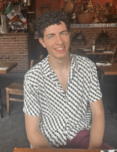

Leadership
The Board
Meet the dedicated student leaders who guide Bridges ESL and support our community of English learners
2025-2026 Bridges ESL Board

Co-President: Brian Moore
b.moore@yale.edu
Brian is from Chicago and is a Senior in Silliman majoring in humanities. Brian does
everything under the sun, but his most rewarding activity besides Bridges ESL is Link New
Haven, which operates a free community resource desk in New Haven Green every week. He also
loves endless conversations, any sport that involves running and learning new words. Brian
is doing Bridges because when his mother migrated from Mexico, she had a difficult time
overcoming the language barrier. In high school, teaching his mother English sparked within
him a passion for spreading the gift of literacy. He joined Bridges his first semester on
campus, and he will continue being involved with the organization until his last. Tutoring
for Bridges is always the highlight of his week, and he can't stop telling people about his
wonderful experience!
Co-President: Yuanyu Chen
yuanyu.chen@yale.edu
Yuanyu is a senior in Branford college majoring in Neuroscience. Yuanyu is from Reading, PA, and is involved in Community Health Educators, neuro research, and interning at Gather Haven. In her free time, she likes learning to bake, going to supermarkets, crocheting, and sketching. The favorite part of Bridges ESL for Yuanyu has been the interactions and cultural exchanges she’s had. She loves that she can come into class and hear everyone’s wonderful stories about their strange experiences, new coffee spots, and cooking adventures.
Secretary: Maryann Dang
maryann.dang@yale.edu
Maryann Dang is a sophomore in Silliman studying Mathematics and English. She’s from small town Mississippi where she loves going to movies with friends and drinking slushies in the parking lot. Maryann started Bridges ESL in her first semester of freshman year, and she has continued every semester since. She loves coming up with English-learning games to play with her students and debating hot topics. Besides Bridges ESL, Maryann is also involved as the Vice President of Flyte Tutoring and the Service Coordinator of Sunrise Cafe.
Treasurer: Sammie Lin
sammie.lin@yale.edu
Sammie is a junior in Berkeley College majoring in Molecular, Cellular, and Developmental Biology and pursuing a certificate in Education Studies. Originally from Burke, VA, she has been involved with Bridges since her first year and is excited to serve as Treasurer this year. Having once been an English as a Second Language student in elementary school, she is passionate about supporting others on the same journey and helping them build confidence in using English for daily life, work, and beyond. Through Bridges, she has enjoyed connecting with students from a wide range of cultural and linguistic backgrounds. Outside of Bridges, she is a Social Services Volunteer at HAVEN Free Clinic, Co-Chair for Yale Model United Nations, and an Undergraduate Researcher at the Yale School of Medicine.
Co-Director of Recruitment: Gaby Vanegas
gaby.vanegas@yale.edu
Gaby is a sophomore in Benjamin Franklin College majoring in Economics. Originally from Queens, New York, and coming from Ecuadorian immigrants, she understands firsthand the importance of accessible education for immigrant communities. This background and her passion for teaching led her to join Bridges during her first year at Yale. At Bridges, she has found a welcoming community centered on cultural exchange and mutual learning. Now serving as Co-Director of Recruitment, Gaby is eager to continue expanding opportunities for local New Haven residents. Beyond Bridges, she is involved in several finance organizations on campus, serves as treasurer of the Ecuadorian Student Association, and enjoys reading, traveling, and exploring new corners of campus in her free time.
Co-Director of Recruitment: MacKenzie Altuzar
mackenzie.altuzar@yale.edu
MacKenzie Altuzar is a junior in Ezra Stiles majoring in Molecular, Cellular, and Developmental Biology with plans to attend medical school after graduation. MacKenzie is from Omaha, Nebraska and considers herself a proud midwesterner. She joined Bridges during her freshman year and has continually sought out new ways to support the immigrant community in New Haven, inspired in part by her father’s stories about his own experiences as a young immigrant. In addition to Bridges, she is also a part of the Yale Society for the Advancement of Chicanos/Hispanics and Native Americans in Science (YSACNAS) chapter on campus, hoping to foster and advocate for more diversity within the sciences. When she’s not studying or tutoring, you can find her watching films or dancing with the Yale Ballroom Dance team and Yale Ballet Folklorico.
Co-Director of Education: Samantha Warfel
samantha.warfel@yale.edu
Samantha Warfel is a junior at Yale, originally from a small town in northern Baltimore County, Maryland called Hereford. At Yale, she is studying Political Science with an Interdisciplinary Concentration in International Relations.
She began tutoring with Bridges as a first-year student and has loved growing with the organization over the years. Her favorite part about the organization is its commitment to fostering community, and the unique opportunity it provides for tutors and students to build sincere relationships. This year, she is serving as a Co-Director of Education for Bridges.
On campus, Samantha has been a Researcher with the Yale Foreign Policy Initiative and has worked with Dwight Hall as a Philanthropy and Alumni Engagement Assistant.
Beyond these roles, she has been involved with the Women’s Leadership Initiative, Yale Model United Nations 50, and research with Oxford University’s Violent Extremism Lab. This past summer, she served as a U.S. Senate Intern on Senator Van Hollen’s National Security team, working on strategic communications and crisis mitigation.
In her free time, Samantha enjoys going on long walks around campus with friends, trying new yoga classes, and playing NYT games.
Co-Director of Education: Jaime Cha
jungbin.cha@yale.edu
Jaime is a junior in Morse majoring in chemical engineering. Jaime is an international
student from Bundang, South Korea. Besides Bridges ESL, Jaime is involved in doing research
in the Turner Lab and the Winter Lab, Pitches and Tones A Capella (yayy pitches!!) and is
the co-president of the Yale International Korean Club, Hanppuri. Jaime also works in the
Marx Library and ULAs for Physics 188. In her free time, Jaime likes to sing, cook, and
rewatch Harry Potter. Being an international student from Korea, she also learned English as
a second language. She wants to give back by helping fellow English learners because she
knows how hard it is to move to a new country and start speaking in a language that you have
never used in daily life before. She cherishes being able to forge unique friendships with
people from all over the world through Bridges ESL.
Director of Publicity: Tiffany Zhou
tiffany.zhou@yale.edu
Hailing from New Hampshire, Tiffany is a junior double majoring in Molecular, Cellular, and Developmental Biology and Psychology in Silliman College. Growing up with immigrant parents, she experienced firsthand the challenges of learning English and, as such, appreciates the work Bridges does to support immigrants in New Haven. Through Bridges, she has had the opportunity to meet individuals from diverse backgrounds and cultures, something she considers a beautiful aspect of the organization.
In addition to her involvement with Bridges, Tiffany is active in several service clubs on campus, including HAPPY, the Red Cross Club, and the Community Health Care Van. She also conducts research at the Medical School! In her free time, Tiffany enjoys engaging in arts and crafts, building Legos, and solving puzzles.
Co-Director of Pairing: Asuka Koda
asuka.koda@yale.edu
From New York City, Asuka Koda (she/her) is a junior in Davenport majoring in Mathematics and Philosophy. She was inspired to join Bridges because, as an immigrant herself, she wishes this had been a resource available to her and her parents while learning English. At Yale, she is currently taking a glassblowing class and enjoys creating pottery in her free time.
Co-Director of Pairing: Linda Do
linda.do@yale.edu
Linda (she/her) is a junior in Pierson majoring in Molecular Biophysics & Biochemistry (MB&B). These days, she enjoys linguistics, origami cranes, and naps. Thankfully, she is in the 10% of Asian Americans who are not lactose intolerant. Since this is her third year with Bridges, she is excited to see old faces again and meet new ones!
Director of Website Development: Sam Rodriguez
sam.rodriguez@yale.edu
Sam (he/him) is a junior in Davenport majoring in Comparative Literature and pursuing a certificate in Quantum Engineering and Science. He joined Bridges his second year and immediately fell in love with the community. Understanding the importance of education, he is passionate about web development and is excited to work on the Bridges website this year. In his free time, he enjoys reading, writing, and dancing salsa. Outside of Bridges, Sam is the Newbie Captain of the Yale Ballroom Dance Team, involved with the Archive Committee of La Casa, and works for the Yale Publishing Press. Please feel free to ask him any questions about his favorite books, or movies!
The Bridges ESL Board is the governing body of the organization. Its goal is to implement improvements and to provide ongoing support for tutors and students.
Contact us at bridgesesl@gmail.com
Past Leadership
2023-2024 Board
Co-Presidents: Derek Song and
Melina Joseph
Treasurer: Denise Peng
Secretary: Ignacio Ruiz-Sanchez
Director of Recruitment: Brian
Moore
Director of Pairing: Rosa
Anderson Barrera
Director of Publicity: Yuanyu
Chen
Director of Education: Selin
Nalbantoglu
2022-2023 Board
Co-Presidents: Gina Coque and
Isabelle Stemerman
Treasurer: Melina Joseph
Secretary: Derek Song
Director of Recruitment: Michaela
Bauman
Director of Pairing: Ignacio
Ruiz-Sanchez
Director of Publicity: Denise
Peng
Bridges ESL Historian: Janic
Aguirre
2021-2022 Board
Co-Presidents: Charlie
Mayock-Bradley and Emma Lewer
Treasurer: Isabelle Stemerman
Secretary: Julia Arancio
Director of Pairing: Melina
Joseph
Director of Education: Gina Coque
Director of Publicity: Michaela
Bauman
2020-2021 Board
Co-Presidents: Johnny Gross and
Jacy Scott
Treasurer: Paulina Wells
Secretary: Carmen Ozonas Mascaró
Director of Recruitment: Charlie
Mayock-Bradley
Director of Pairing: Emma Lewer
Director of Education: Macrina
Wang
Director of Publicity: Julia
Arancio